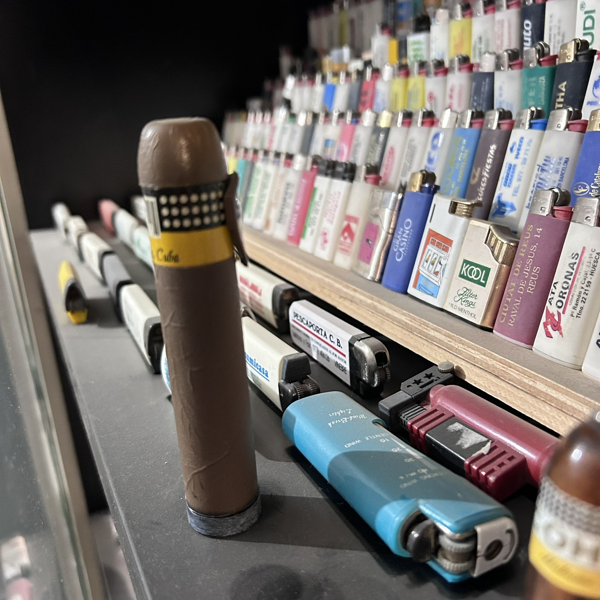

La colección · Una categoría
Encendedores con forma de puro

Una de las familias más curiosas de la colección: encendedores con forma de puro, fabricados como artículos oficiales de marcas de puros como Cohiba, La B del M o Cuba. No son simples imitaciones, sino piezas de merchandising real, con sus etiquetas, anillas y acabados cuidados al detalle.
El contraste entre su aspecto —que invita a confundirlas con un puro auténtico— y su función real como encendedor es precisamente lo que las convierte en piezas tan llamativas dentro de la colección.
José las conserva agrupadas, de forma que se puede apreciar de un vistazo la variedad de marcas y formatos que ha ido reuniendo a lo largo de los años.